MyAquarium
For All Your Tropical Fish Tank Needs...
Return Home
Setting Up Your Fish Tank
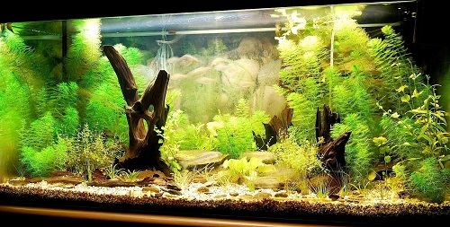
Here we see a 50 gallon fish tank, complete with driftwood and plants...
What You'll Need
Here are things you are going to need if you are setting up a basic 10 gallon fish tank.
If you plan on setting up a larger fish tank, scale these items accordingly.
Hover over a thing to see what it looks like!
-
A Glass Fish Tank
A hood, background, and a lighting system are recommended, but not required.
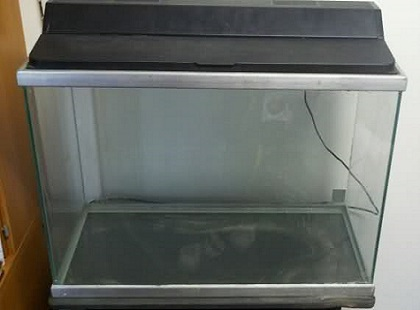
- Gravel
Avoid colored gravel, as the dye might come off and contaminate the water.
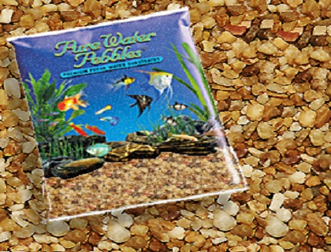
- Decorations
Fish need places to hide.
Additionally, check out our section on plants
and learn why adding them is important.
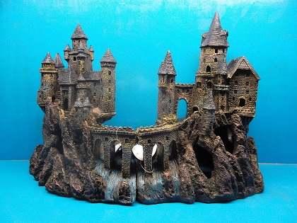
- Circulation
Filters are very important because they keep the water clean.
You might also want to consider purchasing an air pump
and an air stone
to provide oxygen in the absence of plants.
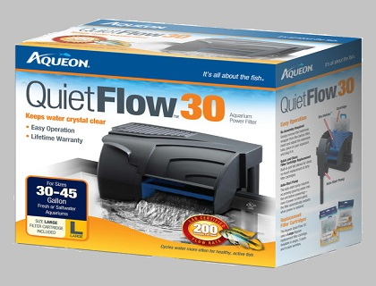
- Heating
It is important to keep track a fish tank's temperature. Thus, purchasing a thermometer and a heater would be wise.
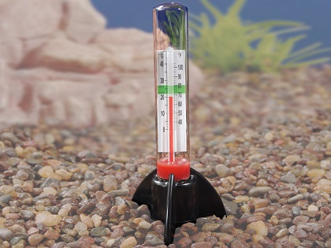
Of course, you do not need all of these items. However, these items ensure a happy and healthy fish tank!
Setting Up
Follow these steps to ensure you set up a safe home for your fish.
Hover over a step to see what it looks like!
- Rinse the gravel in warm water and let it soak in the water for an hour or so. We do this to rid the gravel of any pigments or chemicals.
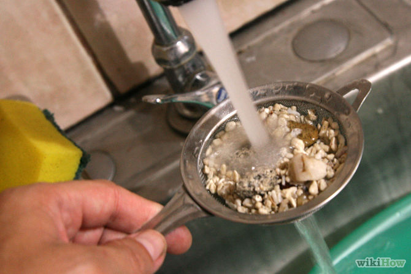
- Rinse the tank and any plants or decorations.
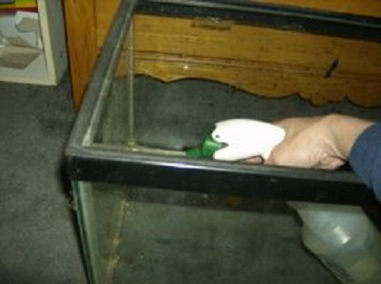
- Place the tank in a place with enough lighting.
However, it should not be in front of a window.
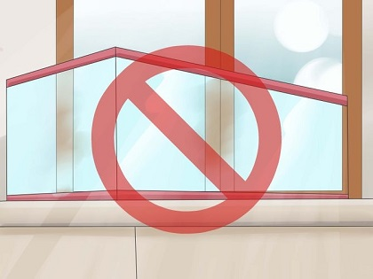
- Place the decorations or plants in a desired position.
Place enough gravel on them so they don't float after filling the tank.
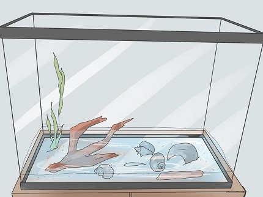
- Fill the rest of the tank with the gravel you have left.
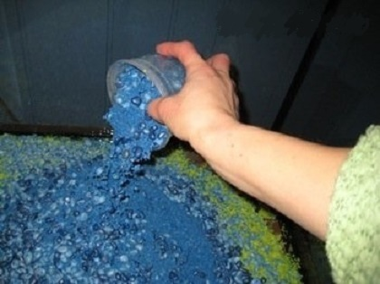
- Set up your filtration and heating system. Let your fish tank cycle for about 3 days. This way, the filter can clean the water and prepare it for the fish.
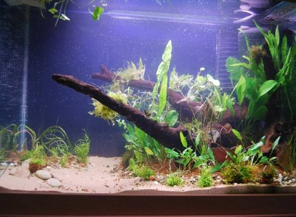
- Welcome your fish to their new home!
Keep the fish in its bag and place it in the water for about an hour. After that, let the fish enter!
Remember: Never mix the water from its bag with the tank's water!
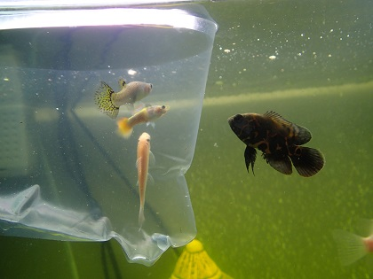
Check out our section on
fish to see what you can add to your tank!
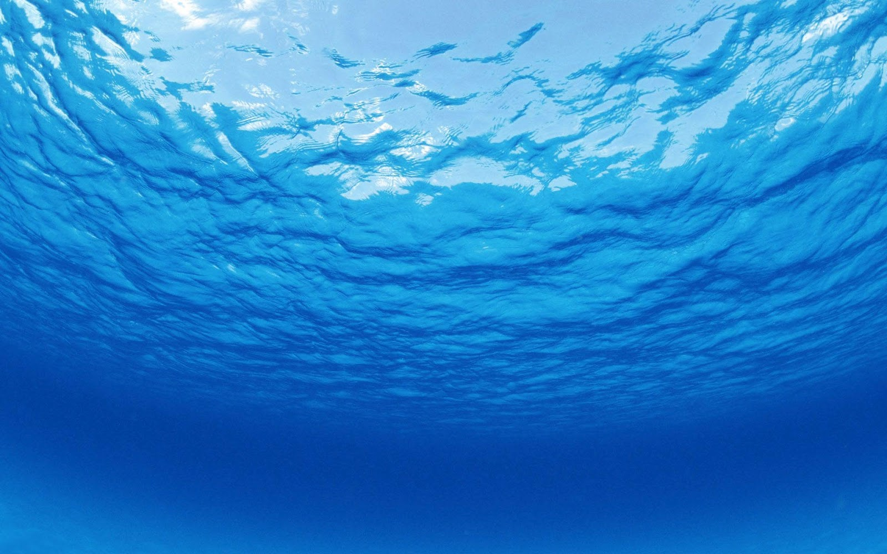